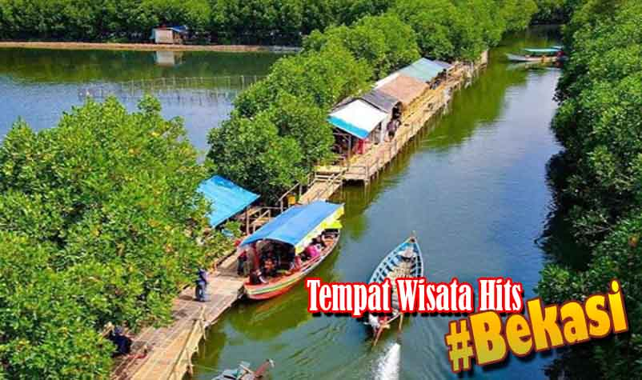
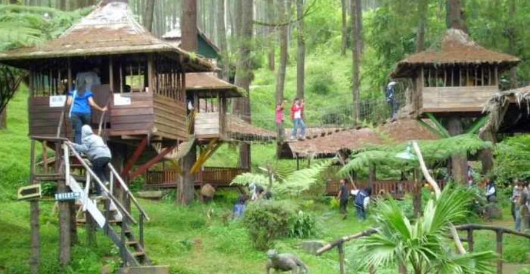
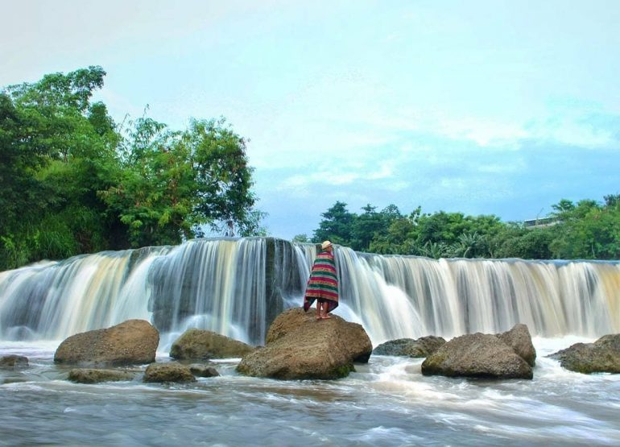
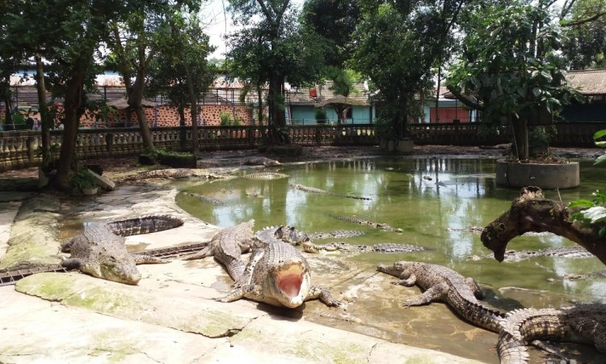
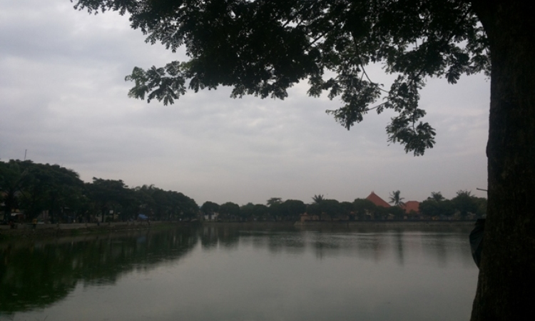
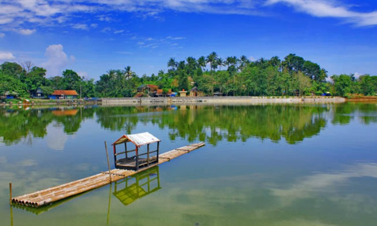

Tempat Wisata Kota Bekasi

Membicarakan Bekasi rasanya kamu akan akrab dengan hadirnya aneka jokes tentang kota ini. Pasalnya kota ini memang termasuk kota di Indonesia yang identik dengan kemacetan. Namun siapa yang sangka, kota yang katanya tak memiliki wahana wisata ini, ternyata miliki tempat wisata yang memiliki keindahan dan keunikan.
Rumah Pohon Jati Asih
Mengunjungi tempat satu ini,kamu tidak akan hanya berjalan jalan dan menikmati udara yang sejuk. Sebab kamu juga bisa melakukan banyak aktivitas yang menarik di sini. Kamu bisa menjajal untuk bermain outbond untuk melatih ketrampilan kamu. Memang lokasi satu ini sering dijadikan tempat untuk mengadakan acara mulai dari family gathering hingga outing perusahaan maupun acara acara dari sekolah.
Sehingga tak heran jika kamu akan menemui area outbond dengan beranekaragam halang rintang. Tak hanya outbond, permainan untuk ice breaking juga diberikan. Sehingga anak anak yang mengikuti kegiatan outbond di tempat ini akan dilatih konsentrasi maupun kerjasama dengan timnya. Permainan permainan yang ada juga terkadang menggabungkan game dan juga psikologi yang pastinya sangat seru dan menyenangkan.
Curug Parigi
Curug Parigi ini berlokasi di Cikiwul, Bantargebang, Bekasi, Jawa Barat. Curug ini memiliki panorama yang sangat indah dan cantik. Curug ini pernah di gunakan sebagai lokasi syuting salah satu judulnya adalah sang penakluk yang di perankan oleh Suzanna.
Belakangan ini tempat ini juga mulai di jadikan sebagai tempat populer di Bekasi. Banyak sekali wisatawan yang berkunjung ke sini untuk melihat keindahan dari curug ini. Di tempat ini juga terdapat spot yang bagus untuk di jadikan sebagai background foto Anda.
Taman Buaya
Taman buaya ini terletak di Jl. Raya Serang Cibarusah, Desa Sukaragam, Bekasi, Jawa Barat. Sampai sekarang di tempat ini ada sekitar kurang lebih 500 buaya yang di pelihara. Anda tidak perlu khawatir tentang keamanannya. Karena kandang buaya sudah di pagar i oleh besi yang kuat.
Tempat Wisata di Bekasi yang satu ini juga memiliki fasilitas taman bermain untuk anak-anak. Jika Anda lelah berkeliling ingin beristirahat atau ingin bersantai. Di tempat ini juga telah menyediakan gazebo.
Danau Marakas
Apabila Anda sedang berlibur ke Bekasi, Anda wajib mampir ke tempat yang satu ini yaitu Danau Marakas. Karena danau ini memiliki keindahan yang bisa membuat Anda betah berlama lama di tempat ini. Anda bisa bersantai sambil menikmati udara segar di danau ini.
Lokasi danau ini berada di Jl. Sejahtera No. 53, Babelan, Bekasi, Jawa Barat. Untuk masuk ke danau ini juga gratis atau tidak di kenakan biaya masuk. Tempat ini di buka pada pukul 08:00 pagi hingga 05:00 sore WIB.
Danau Situ Gede
Jika Anda gemar memancing tempat ini sangat cocok untuk Anda yaitu Danau Situ Gede. Di danau yang satu ini sering diadakan lomba memancing. Setiap harinya tempat ini ramai di kunjungi oleh orang-orang.
Danau Situ Gede ini juga sering kali di gunakan sebagai lokasi untuk membuat beberapa film-film di TV. Danau ini juga memiliki beberapa fasilitas yang bisa Anda coba. Seperti perahu, hutan, dan juga tempat memancing. Perahu tersebut dapat Anda gunaan untuk berkeliling di sekitar danau sambil melihat pemandangan.
Itu lah beberapa tempat wisata keren di bekasi, dan masih banyak lagi wisata keren di bekasi yang Lainnya.